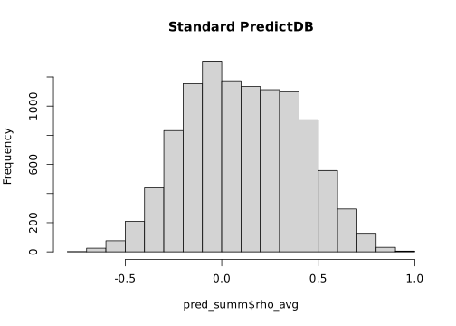
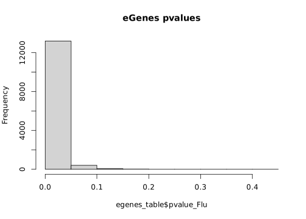
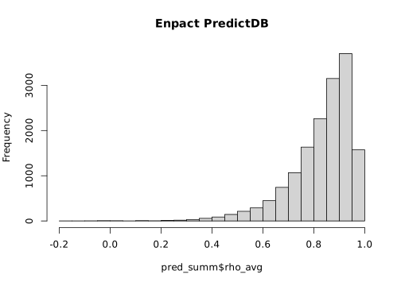
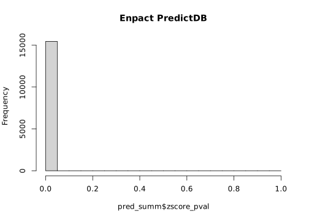
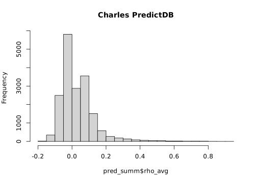
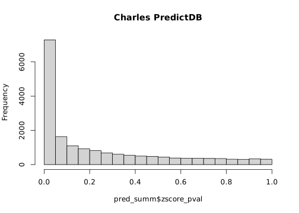

Code
library(ggplot2)Saideep Gona
January 24, 2024
I seem to be getting strangely low gene counts past filtering after running PredictDB. Need to investigate this.
[1] 10487 24

[1] 230 24
[1] 10487 36
[1] 0.1050551[1] 18714 24

[1] 18695 24[1] 18082 24

[1] 2992 24---
title: "2.1.2_check_predictDB_standard"
author: "Saideep Gona"
date: "2024-01-24"
format:
html:
code-fold: true
code-summary: "Show the code"
execute:
freeze: true
warning: false
---
# Context
I seem to be getting strangely low gene counts past filtering after running PredictDB. Need to investigate this.
```{r}
library(ggplot2)
```
## Compare normalized counts from different sources
### Gene expression
```{r}
expression_files <- list(
onta_expression="/beagle3/haky/users/saideep/projects/aracena_modeling/Inputs/counts_matrices/final_testing/fully_preprocessed_expression_onta.txt",
lnorm_before_TMM="/beagle3/haky/users/saideep/projects/aracena_modeling/Inputs/counts_matrices/final_testing/fully_preprocessed_expression_3_7_lnormTRUE_beforeTRUE_scale1.txt",
lnorm_after_TMM="/beagle3/haky/users/saideep/projects/aracena_modeling/Inputs/counts_matrices/final_testing/fully_preprocessed_expression_3_7_lnormTRUE_beforeFALSE_scale1.txt",
no_lnorm="/beagle3/haky/users/saideep/projects/aracena_modeling/Inputs/counts_matrices/final_testing/fully_preprocessed_expression_3_7_lnormFALSE_beforeTRUE_scale1.txt",
scaled_lnorm_before_TMM="/beagle3/haky/users/saideep/projects/aracena_modeling/Inputs/counts_matrices/final_testing/fully_preprocessed_expression_3_7_lnormTRUE_beforeTRUE_scale1e+06.txt",
lnorm_before_TMM_4_4="/beagle3/haky/users/saideep/projects/aracena_modeling/Inputs/counts_matrices/final_testing/fully_preprocessed_expression_4_4_lnormTRUE_beforeTRUE_scale1.txt",
kallisto_norm="/beagle3/haky/users/saideep/projects/aracena_modeling/Inputs/counts_matrices/final_testing/fully_preprocessed_expression_3_7_lnormFALSE_beforeFALSE_scale1_sourcekallisto.txt"
)
```
```{r}
expression_dfs <- lapply(expression_files, function(x) {
read.table(x, header = TRUE, sep = " ")
})
common_colnames <- Reduce(intersect, lapply(expression_dfs, colnames))
common_flu_colnames <- grep("Flu", common_colnames, value = TRUE)
flu_dfs <- lapply(expression_dfs, function(x) x[common_flu_colnames])
```
### Cross-genome mean expression correlations
```{r}
library(corrplot)
common_genes <- Reduce(intersect, lapply(flu_dfs, rownames))
common_genes_dfs <- lapply(flu_dfs, function(x) x[common_genes,])
mean_expression_dfs <- lapply(common_genes_dfs, function(x) {
rowMeans(x)
})
mean_expression_df <- do.call(cbind, mean_expression_dfs)
corrplot(cor(mean_expression_df, method = "spearman"), main = "Spearman correlation of mean expression across sources", method = "number")
corrplot(cor(mean_expression_df, method = "pearson"), main = "Pearson correlation of mean expression across sources", method = "number")
```
### Example cross-individual correlation for genes
```{r}
example_genes <- common_genes[1:3]
common_samples <- Reduce(intersect, lapply(flu_dfs, colnames))
common_sample_dfs <- lapply(flu_dfs, function(x) x[,common_samples])
for (gene in example_genes) {
gene_dfs <- lapply(common_sample_dfs, function(x) x[gene,])
gene_df <- do.call(rbind, gene_dfs)
print(dim(gene_df))
pairs(as.data.frame(t(gene_df)), main = gene)
}
```
### Genotype
One way to check the genotype data is to simply look for eQTLs from the manuscript and plot their allele dosage vs. expression.
```{r}
genotypes_source_file = "/beagle3/haky/users/saideep/projects/aracena_modeling/Inputs/QTL_mapping/SNP_genotypes_b37.txt"
genotypes <- read.table(genotypes_source_file, sep="\t", header=TRUE, row.names=1)
```
```{r}
top_eGenes <- c("ENSG00000121716", "ENSG00000256274", "ENSG00000166435")
top_flu_qtls <- c("chr7_99910443_C_G_b37","chr12_11229016_C_G_b37","chr11_74560117_T_C_b37")
qtl_betas <- c(0.895589436,-0.838071979,0.96135383)
top_eGene_df <- data.frame(top_eGenes=top_eGenes, top_flu_qtls=top_flu_qtls, qtl_betas=qtl_betas)
rownames(top_eGene_df) <- top_eGene_df$top_eGenes
top_eGene_df <- top_eGene_df[,-1]
colnames(genotypes) <- paste0(colnames(genotypes), "_Flu")
```
```{r}
row_list <- matrix(0, nrow=(length(flu_dfs)*3*length(colnames(flu_dfs[[1]]))), ncol=6)
c=1
for (gene_i in 1:length(top_eGenes)) {
cur_gene <- top_eGenes[gene_i]
cur_qtl <- top_flu_qtls[gene_i]
for (ind in colnames(flu_dfs[[names(flu_dfs)[1]]])) {
for (table in names(flu_dfs)) {
print(gene_i)
cur_row <- c(cur_gene, cur_qtl, ind, genotypes[cur_qtl, ind], flu_dfs[[table]][cur_gene, ind], table)
row_list[c,] <- cur_row
c <- c+1
}
}
}
```
```{r}
qtl_exp_df <- as.data.frame(row_list)
colnames(qtl_exp_df) <- c("gene", "qtl", "ind", "genotype", "expression", "source")
qtl_exp_df$genotype <- as.factor(as.character(qtl_exp_df$genotype))
qtl_exp_df$expression <- as.numeric(as.character(qtl_exp_df$expression))
str(qtl_exp_df)
```
```{r}
library(ggplot2)
ggplot(qtl_exp_df, aes(x=genotype, y=expression)) + geom_point() + facet_wrap(gene~source, nrow=3)
for (table in names(flu_dfs)) {
only_full_norm <- qtl_exp_df[qtl_exp_df$source == table,]
print(ggplot(only_full_norm, aes(x=genotype, y=expression)) + geom_point() + facet_wrap(gene~source, nrow=length(top_eGenes)))
}
```
## Compare PredictDB results
```{r}
library(corrplot)
model_summaries <- list(
onta_expression="/beagle3/haky/users/saideep/projects/aracena_modeling/linearization/standard_predictDB_aracena_NI_singlenested_onta/database/Model_summary.txt",
lnorm_before_TMM="/beagle3/haky/users/saideep/projects/aracena_modeling/linearization/standard_predictDB_aracena_Flu_nested_3_7_lnormTRUE_beforeTRUE_scale1/database/Model_summary.txt",
lnorm_after_TMM="/beagle3/haky/users/saideep/projects/aracena_modeling/linearization/standard_predictDB_aracena_Flu_nested_3_7_lnormTRUE_beforeFALSE_scale1/database/Model_summary.txt",
no_lnorm="/beagle3/haky/users/saideep/projects/aracena_modeling/linearization/standard_predictDB_aracena_Flu_nested_3_7_lnormFALSE_beforeTRUE_scale1/database/Model_summary.txt",
scaled_lnorm_before_TMM="/beagle3/haky/users/saideep/projects/aracena_modeling/linearization/standard_predictDB_aracena_Flu_nested_3_7_lnormTRUE_beforeTRUE_scale1e+06/database/Model_summary.txt",
lnorm_before_TMM_4_4="/beagle3/haky/users/saideep/projects/aracena_modeling/linearization/standard_predictDB_aracena_Flu_nested_4_4_lnormTRUE_beforeTRUE_scale1/database/Model_summary.txt",
lnorm_before_TMM_4_4_repeat="/beagle3/haky/users/saideep/projects/aracena_modeling/linearization/standard_predictDB_aracena_Flu_nested_4_4_lnormTRUE_beforeTRUE_scale1_REPEAT/database/Model_summary.txt"
)
```
```{r}
loaded_model_summaries <- lapply(model_summaries, function(x) {
read.table(x, header = TRUE, sep = "\t", row.names = 1)
})
common_genes <- Reduce(intersect, lapply(loaded_model_summaries, function(x) rownames(x)))
enriched_onta_genes <- rownames(loaded_model_summaries$onta_expression[loaded_model_summaries$onta_expression$zscore_pval < 0.05,])
common_genes_enriched <- intersect(common_genes, enriched_onta_genes)
```
```{r}
zscore_pval_df <- data.frame(genes=common_genes)
zscore_pval_df_enriched <- data.frame(genes=common_genes_enriched)
for (table in names(loaded_model_summaries)) {
print(table)
hist(loaded_model_summaries[[table]]$rho_avg, breaks = 20, main = table)
hist(loaded_model_summaries[[table]]$zscore_pval, breaks = 20, main = table)
zscore_pval_df[table] <- loaded_model_summaries[[table]][common_genes,]$zscore_pval
zscore_pval_df_enriched[table] <- loaded_model_summaries[[table]][common_genes_enriched,]$zscore_pval
}
```
```{r}
rownames(zscore_pval_df) <- zscore_pval_df$genes
zscore_pval_df$genes <- NULL
rownames(zscore_pval_df_enriched) <- zscorxe_pval_df_enriched$genes
zscore_pval_df_enriched$genes <- NULL
corrplot(cor(zscore_pval_df, method="spearman"), method = "color", main = "Correlation of zscore pvalues")
corrplot(cor(zscore_pval_df_enriched, method="spearman"), method = "color", main = "Correlation of zscore pvalues (enriched genes)")
pairs(zscore_pval_df_enriched)
```
```{r}
filtered_dbs <- list(
onta_expression="/beagle3/haky/users/saideep/projects/aracena_modeling/linearization/standard_predictDB_aracena_Flu_singlenested_onta/filtered_db/predict_db_Model_training_filtered.db",
lnorm_before_TMM="/beagle3/haky/users/saideep/projects/aracena_modeling/linearization/standard_predictDB_aracena_Flu_singlenested_3_7_lnormTRUE_beforeTRUE_scale1/filtered_db/predict_db_Model_training_filtered.db",
# lnorm_after_TMM="/beagle3/haky/users/saideep/projects/aracena_modeling/linearization/standard_predictDB_aracena_Flu_singlenested_3_7_lnormTRUE_beforeFALSE_scale1/filtered_db/predict_db_Model_training_filtered.db",
no_lnorm="/beagle3/haky/users/saideep/projects/aracena_modeling/linearization/standard_predictDB_aracena_Flu_singlenested_3_7_lnormFALSE_beforeTRUE_scale1/filtered_db/predict_db_Model_training_filtered.db",
scaled_lnorm_before_TMM="/beagle3/haky/users/saideep/projects/aracena_modeling/linearization/standard_predictDB_aracena_Flu_singlenested_3_7_lnormTRUE_beforeTRUE_scale1e+06/filtered_db/predict_db_Model_training_filtered.db",
lnorm_before_TMM_4_4="/beagle3/haky/users/saideep/projects/aracena_modeling/linearization/standard_predictDB_aracena_Flu_singlenested_4_4_lnormTRUE_beforeTRUE_scale1/filtered_db/predict_db_Model_training_filtered.db",
lnorm_before_TMM_4_4_repeat="/beagle3/haky/users/saideep/projects/aracena_modeling/linearization/standard_predictDB_aracena_Flu_singlenested_4_4_lnormTRUE_beforeTRUE_scale1_REPEAT/filtered_db/predict_db_Model_training_filtered.db"
)
```
```{r}
library(DBI)
filtered_dbs_loaded <- loaded_model_summaries <- lapply(filtered_dbs, function(x) {
mydb <- dbConnect(RSQLite::SQLite(), x)
myquery <- dbGetQuery(mydb, 'SELECT * FROM extra')
})
# onta_expression="/beagle3/haky/users/saideep/projects/aracena_modeling/linearization/standard_predictDB_aracena_Flu_nested_onta/filtered_db/predict_db_Model_training_filtered.db"
# mydb <- dbConnect(RSQLite::SQLite(), onta_expression)
# myquery <- dbGetQuery(mydb, 'SELECT * FROM extra')
```
```{r}
common_genes <- Reduce(intersect, lapply(filtered_dbs_loaded, function(x) x$genename))
```
```{r}
library(UpSetR)
genes_list <- lapply(filtered_dbs_loaded, function(x) x$genename)
upset(fromList(genes_list), order.by = "freq", nsets = length(genes_list))
```
# Check for eGenes from Aracena et al.
```{r}
# Load eGenes table
path_to_egenes <- "/beagle3/haky/users/saideep/projects/aracena_modeling/Inputs/QTL_mapping/eqtls.csv"
egenes_table <- read.table(path_to_egenes, header = TRUE, sep = ",")
hist(egenes_table$pvalue_Flu, main = "eGenes pvalues")
```
```{r}
dim(pred_summ)
dim(egenes_table)
```
```{r}
subset_to_egenes <- merge(egenes_table, pred_summ, by.x = "feature", by.y = "gene")
dim(subset_to_egenes)
ggplot(subset_to_egenes, aes(x = pvalue_Flu, y = zscore_pval)) + geom_point()
spearcor <- cor(subset_to_egenes$pvalue_Flu, subset_to_egenes$zscore_pval, method = "spearman")
spearcor
```
### Load summary Enpact
```{r}
path_pred_summ <- "/beagle3/haky/users/saideep/projects/aracena_modeling/linearization/predixcan_RNAseq_Flu_from_HDF5_mean_log_revised/database/Model_summary.txt"
pred_summ <- read.table(path_pred_summ, header = TRUE, sep = "\t")
print(dim(pred_summ))
hist(pred_summ$rho_avg, breaks = 20, main = "Enpact PredictDB")
hist(pred_summ$zscore_pval, breaks = 20, main = "Enpact PredictDB")
pred_summ_filt <- pred_summ[(pred_summ$rho_avg > 0.1) & (pred_summ$zscore_pval < 0.05),]
print(dim(pred_summ_filt))
```
```{r}
path_pred_summ <- "/beagle3/haky/users/charles/project/singleXcanDL/PredicDB/OneK1K/PrediXcan/work_dir/results/database/Model_summary.txt"
pred_summ <- read.table(path_pred_summ, header = TRUE, sep = "\t")
print(dim(pred_summ))
hist(pred_summ$rho_avg, breaks = 20, main = "Charles PredictDB")
hist(pred_summ$zscore_pval, breaks = 20, main = "Charles PredictDB")
pred_summ_filt <- pred_summ[(pred_summ$rho_avg > 0.1) & (pred_summ$zscore_pval < 0.05),]
print(dim(pred_summ_filt))
```
### Old code
```{r}
# Create merged expression tables
merged_expression <- merge(flu_onta_expression, flu_my_normalized_counts, by = "row.names",)
merged_expression_no_lnorm <- merge(flu_onta_expression, flu_my_normalized_counts_no_lnorm, by = "row.names",)
merged_expression_no_voom <- merge(flu_onta_expression, flu_my_normalized_counts_no_voom, by = "row.names",)
merged_expression_no_exp_pcs <- merge(flu_onta_expression, flu_my_normalized_counts_no_exp_pcs, by = "row.names",)
merged_expression_10k <- merge(flu_onta_expression, flu_my_normalized_counts_10k, by = "row.names",)
merged_expression_full_10k <- merge(flu_my_normalized_counts, flu_my_normalized_counts_10k, by = "row.names",)
print(colnames(merged_expression))
print(head(merged_expression))
rownames(merged_expression) <- merged_expression$Row.names
merged_expression <- merged_expression[,-1]
print(head(merged_expression))
rownames(merged_expression_no_lnorm) <- merged_expression_no_lnorm$Row.names
merged_expression_no_lnorm <- merged_expression_no_lnorm[,-1]
print(head(merged_expression_no_lnorm))
rownames(merged_expression_no_voom) <- merged_expression_no_voom$Row.names
merged_expression_no_voom <- merged_expression_no_voom[,-1]
print(head(merged_expression_no_voom))
rownames(merged_expression_no_exp_pcs) <- merged_expression_no_exp_pcs$Row.names
merged_expression_no_exp_pcs <- merged_expression_no_exp_pcs[,-1]
print(head(merged_expression_no_exp_pcs))
rownames(merged_expression_10k) <- merged_expression_10k$Row.names
merged_expression_10k <- merged_expression_10k[,-1]
print(head(merged_expression_10k))
rownames(merged_expression_full_10k) <- merged_expression_full_10k$Row.names
merged_expression_full_10k <- merged_expression_full_10k[,-1]
print(head(merged_expression_full_10k))
```
```{r}
inds <- c("AF04", "AF16")
for (ind in inds) {
plot(merged_expression[,paste0(ind,"_Flu.x")], merged_expression[,paste0(ind,"_Flu.y")], main = paste0(ind, "Flu expression comparison, full normalization
"), xlab = "Onta", ylab = "Mine")
plot(merged_expression_no_lnorm[,paste0(ind,"_Flu.x")], merged_expression_no_lnorm[,paste0(ind,"_Flu.y")], main = paste0(ind, "Flu expression comparison, no length normalization)"), xlab = "Onta", ylab = "Mine")
plot(merged_expression_no_voom[,paste0(ind,"_Flu.x")], merged_expression_no_voom[,paste0(ind,"_Flu.y")], main = paste0(ind, "Flu expression comparison, no voom)"), xlab = "Onta", ylab = "Mine")
plot(merged_expression_no_exp_pcs[,paste0(ind,"_Flu.x")], merged_expression_no_exp_pcs[,paste0(ind,"_Flu.y")], main = paste0(ind, "Flu expression comparison, no expression pcs)"), xlab = "Onta", ylab = "Mine")
plot(merged_expression_10k[,paste0(ind,"_Flu.x")], merged_expression_10k[,paste0(ind,"_Flu.y")], main = paste0(ind, "Flu expression comparison, 10k scaling)"), xlab = "Onta", ylab = "Mine")
}
```
```{r}
library(corrplot)
corrplot(cor(merged_expression, method="spearman"), method = "color", main = "Correlation of expression data (full normalization)")
corrplot(cor(merged_expression_no_lnorm, method="spearman"), method = "color", main = "Correlation of expression data (no length normalization)")
corrplot(cor(merged_expression_no_voom, method="spearman"), method = "color", main = "Correlation of expression data (no voom)")
corrplot(cor(merged_expression_no_exp_pcs, method="spearman"), method = "color", main = "Correlation of expression data (no expression pcs)")
corrplot(cor(merged_expression_10k, method="spearman"), method = "color", main = "Correlation of expression data (scaled length norm 10k)")
corrplot(cor(merged_expression_full_10k, method="spearman"), method = "color", main = "Correlation of expression data b/w 10k scaling and full normalization")
```
```{r}
genes <- c("ENSG00000121716", "ENSG00000256274", "ENSG00000166435")
for (gene in genes) {
plot(as.numeric(flu_onta_expression[gene,]), as.numeric(flu_my_normalized_counts[gene,]), main = paste0(gene, " expression comparison"), xlab = "Onta", ylab = "Mine")
plot(as.numeric(flu_onta_expression[gene,]), as.numeric(flu_my_normalized_counts_no_lnorm[gene,]), main = paste0(gene, " expression comparison, no length normalization"), xlab = "Onta", ylab = "Mine")
plot(as.numeric(flu_onta_expression[gene,]), as.numeric(flu_my_normalized_counts_no_voom[gene,]), main = paste0(gene, " expression comparison, no voom"), xlab = "Onta", ylab = "Mine")
plot(as.numeric(flu_my_normalized_counts[gene,]), as.numeric(flu_my_normalized_counts_no_exp_pcs[gene,]), main = paste0(gene, " expression comparison, no exp pcs"), xlab = "Onta", ylab = "Mine")
plot(as.numeric(flu_my_normalized_counts[gene,]), as.numeric(flu_my_normalized_counts_10k[gene,]), main = paste0(gene, " expression comparison, 10k scaling"), xlab = "Onta", ylab = "Mine")
}
```
### Check if length norm lower than 1 is causing the issue
```{r}
# Load my normalized counts
path_to_normalized_counts <- "/beagle3/haky/users/saideep/projects/aracena_modeling/Inputs/counts_matrices/fully_preprocessed_expression_3_7.txt"
my_normalized_counts <- read.table(path_to_normalized_counts, header = TRUE, sep = " ")
print(dim(my_normalized_counts))
print(colnames(my_normalized_counts))
# Load my counts with scaled counts
path_to_normalized_counts_10k <- "/beagle3/haky/users/saideep/projects/aracena_modeling/Inputs/counts_matrices/fully_preprocessed_expression_3_7_1milscale.txt"
my_normalized_counts_10k <- read.table(path_to_normalized_counts_10k, header = TRUE, sep = " ")
print(dim(my_normalized_counts_10k))
print(colnames(my_normalized_counts_10k))
# Load only length normalized counts
path_to_normalized_counts_lnorm <- "/beagle3/haky/users/saideep/projects/aracena_modeling/Inputs/counts_matrices/RNAseq_filtered.counts_LENGTH_NORM.txt"
my_normalized_counts_lnorm <- read.table(path_to_normalized_counts_lnorm, header = TRUE, sep = " ")
print(dim(my_normalized_counts_lnorm))
print(colnames(my_normalized_counts_lnorm))
```
```{r}
# plot(my_normalized_counts_10k[,"AF04_Flu"], my_normalized_counts_lnorm[,"AF04_Flu"], main = "AF04 Flu expression comparison, 10k scaling vs. length norm", xlab = "10k scaling", ylab = "Length norm")
AF04_df <- data.frame(onta= onta_expression[,"AF04_Flu"],full_norm=my_normalized_counts[,"AF04_Flu"],scaled=my_normalized_counts_10k[,"AF04_Flu"], lnorm=my_normalized_counts_lnorm[,"AF04_Flu"], lnorm_less_one=my_normalized_counts_lnorm[,"AF04_Flu"] < 1,
lnorm_less_half=my_normalized_counts_lnorm[,"AF04_Flu"] < 0.5
)
ggplot(AF04_df, aes(x=full_norm, y=scaled, color=lnorm_less_one)) + geom_point()
ggplot(AF04_df, aes(x=full_norm, y=lnorm, color=lnorm_less_half)) + geom_point()
my_normalized_counts_lnorm[my_normalized_counts_lnorm[,"AF04_Flu"] < 1,][,"AF04_Flu"]
```